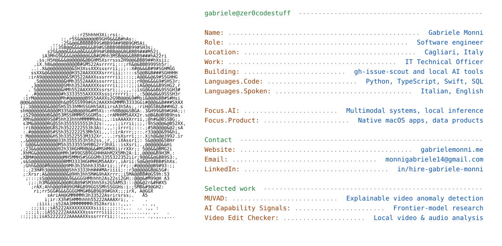

<!doctype html>
<html lang="en">
<meta charset="utf-8">
<meta name="viewport" content="width=device-width, initial-scale=1">
<title>Gabriele Monni | GitHub profile preview</title>
<style>
:root { color-scheme: light dark; }
* { box-sizing: border-box; }
body { margin: 0; background: #fff; }
@media (prefers-color-scheme: dark) { body { background: #0d1117; } }
main { max-width: 1080px; margin: 0 auto; }
picture, img { display: block; width: 100%; height: auto; }
</style>
<main>
<picture>
<source media="(prefers-color-scheme: dark) and (max-width: 600px)" srcset="assets/profile-dark-mobile.svg">
<source media="(prefers-color-scheme: dark)" srcset="assets/profile-dark.svg">
<source media="(max-width: 600px)" srcset="assets/profile-light-mobile.svg">

</picture>
</main>
</html>
